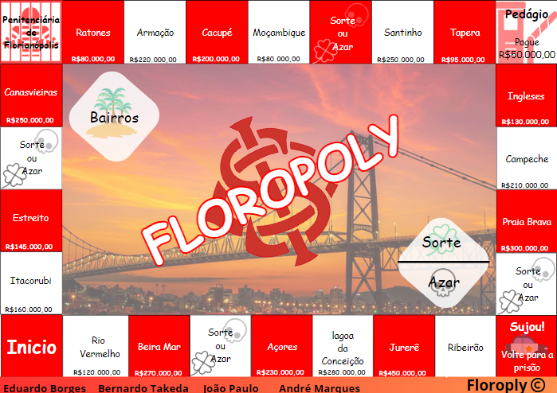

Página Inicial
Humanas
Linguagens
Matemática
Natureza
Técnico ▼
Desenvolvimento de Sistemas
Implantação e Manutenção de Sistemas
Modelagem de Sistemas
Banco de Dados

A atividade "Banco Imobiliário Regional" propõe adaptar o clássico jogo Banco Imobiliário para refletir Florianópolis, substituindo os bairros e ruas por locais da cidade. O objetivo é criar uma versão regionalizada do jogo, permitindo que os jogadores conheçam melhor a cidade enquanto se divertem. A personalização inclui a inclusão de bairros, avenidas e pontos de interesse locais, além de cartas de sorte que mencionam elementos específicos de Florianópolis. Esse projeto é interessante porque combina diversão com aprendizado geográfico, promovendo o conhecimento sobre a cidade de forma lúdica e envolvente. Habilidades Desenvolvidas: C5 H30 H31 e H32
Quebrando a Banca explora como a técnica de contagem de cartas, baseada em probabilidade e estatística, pode proporcionar vantagens em cassinos, mas também traz riscos éticos e pessoais. O filme segue Ben Campbell, que se une a uma equipe para pagar suas despesas acadêmicas e usa um código de palavras para discretamente comunicar a contagem de cartas. Se eu fosse roteirista, criaria o filme Conexões Perigosas, onde uma estudante descobre uma rede secreta que controla a cidade através da teoria dos grafos. Com a ajuda de colegas e um professor, ela desvenda e desmantela a rede, misturando ação e matemática para resolver problemas complexos e impactar a sociedade. Habilidades Desenvolvidas: C5 H31 e H32